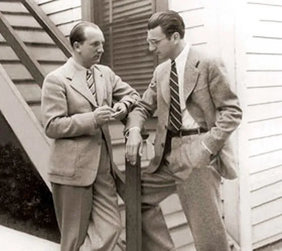
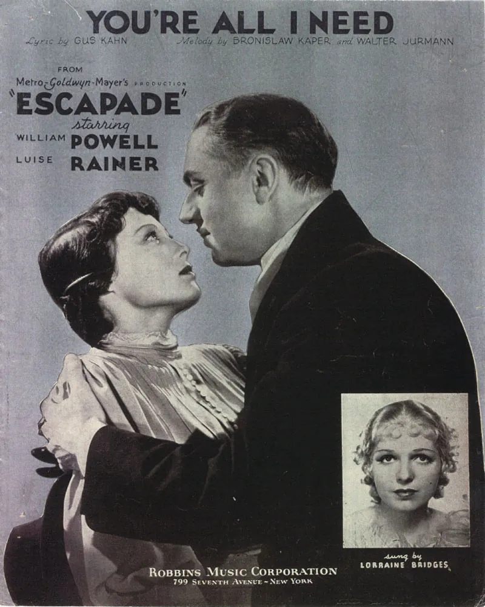

1926
WarsawEarliest published cabaret songs
Kaper’s Warsaw cabaret songs appear in print under the pseudonym Bruno Asper, which the manuscripts show him already using in 1923.
A relational archive of works, people, places, events and surviving evidence documenting Kaper’s career from his Warsaw beginnings to his first years in Hollywood.

Research pathways
Move through the archive by record type. Every entry remains linked to its supporting evidence.
Selected chronology
Three moments from the documented chronology, one for each period of the career. Each keeps its supporting sources.
1926
WarsawKaper’s Warsaw cabaret songs appear in print under the pseudonym Bruno Asper, which the manuscripts show him already using in 1923.

1931
EuropeanKaper meets Walter Jurmann, launching the songwriting partnership that defines his European film career.

1935
HollywoodKaper makes his Hollywood debut at MGM, contributing to Escapade and other major studio projects.
Editorial method
This archive distinguishes documented evidence from qualified attribution. It preserves historical name forms while resolving people and organizations to stable public identities.